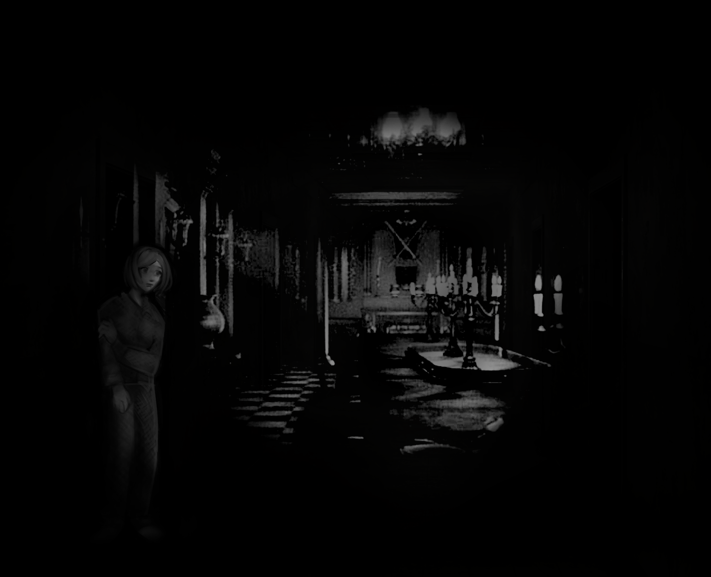

...<!DOCTYPE html><link rel="stylesheet" href="style.css"> <link rel="stylesheet" href="fonts/bitsonbits"/>
<html>
    <head><title> Start </title>
 <style>       
@font-face { font-family: titletext; src: url('fontfile.tff'); }        
h1 {          
font-family: bitsonbits       
} 
</style>
    <audio control autoplay loop>
          <source src="ambience.mp3" type="audio/mp3">
        </audio>
<pre>
<div class="container">
<div class="centered-top"><h1><p style="font-size: 20px;"> No more soup for me. Gotta focus.

        </p> 

<style> 
        .border-span {
            font-size: 14px;
            font-family: bitsonbits;
            border: rgb(138, 138, 138) 8.5px ridge;
            padding:12px;
            top: -50%;
        
        }
    </style>


    <div style="text-align: left;"></div>
<span class="border-span"> <a href="exploredining.html"> EXPLORE ? </span></small></h1></div></a>

</style> <div style="text-align: center;"><span class="border-span2"><a href="donteatthat.html"> EAT ? </span></div>

        <style> 
        .border-span2 {
            font-size: 14px;
            border: rgb(138, 138, 138) 9px ridge;
            font-family: bitsonbits;
            padding:13px;
            margin-left:4%;
        
        }